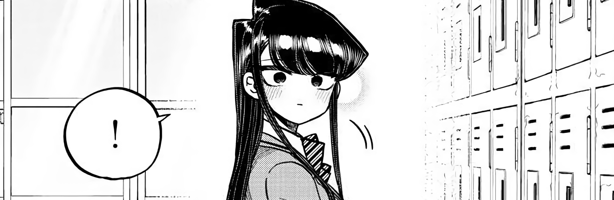

Escrito por: Tomohito Oda
Publicado por:Shogakukan
Demografía: Shōnen
Fecha de publicación: Mayo 18, 2016 – presente
Volúmenes: 21
Komi Can't Communicate está escrito e ilustrado por Tomohito Oda. Antes de su serialización, se publicó un capítulo único en el Weekly Shōnen Sunday de Shogakukan el 16 de septiembre de 2015; la serie comenzó a publicarse en la misma revista el 18 de mayo de 2016
Komi Can't Communicate está escrito e ilustrado por Tomohito Oda. Antes de su serialización, se publicó un capítulo único en el Weekly Shōnen Sunday de Shogakukan el 16 de septiembre de 2015; la serie comenzó a publicarse en la misma revista el 18 de mayo de 2016
En su primer día en el instituto privado Itan, donde transcurre principalmente la historia, Shouko Komi recibe de forma inmediata una ola de inmensa popularidad debido a su belleza sin precedentes, así como la refinada elegancia que sus compañeros de clase creen que posee. Sin embargo, solo Hitohito Tadano, un estudiante de lo más normal sentado de forma contigua a Komi, será capaz de descubrir que tras su impactante belleza se esconde una Komi con problemas para comunicarse. Tadano ayuda a Komi así en su misión para encontrar 100 amigos.